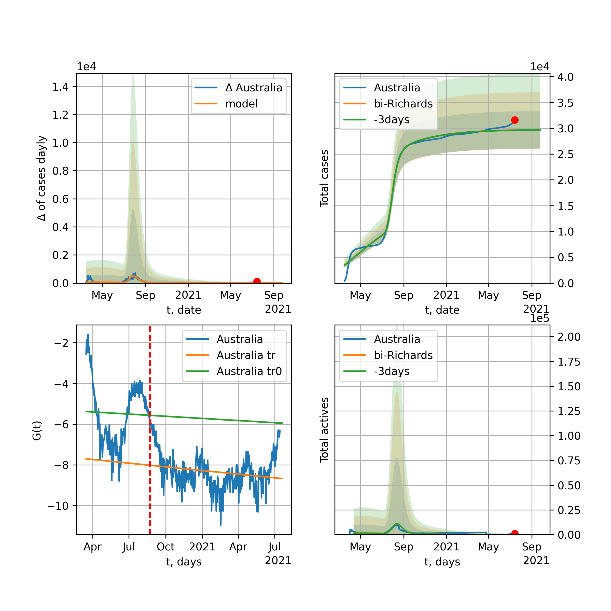

Multi-logistic model of COVID-19 dynamics
Model, code, results
Project maintained by algmaknick Hosted on GitHub Pages — Theme by mattgraham
World

World data at: 2020-06-18
+3 day model MAPE: 0.006733
model: bi-Richards
coeffs: [ 1.00335321e+07 1.74461801e+00 -3.29576070e+01 1.84907855e-02]
S.Korea scenario coeffs: [0.36242246, 2.56241634, 1.84890887, 0.13324732]
rational stdev: 0.083529
forecast at the end of period: +548 days
deltaDaycases: 6158
total cases: 18161188 ± 1516981
total death: 965554 ± 241954
bi-Richards approximation splitting point: 50
trend coefficient of determination: 0.843144
intercept: -2.335618
slope: -0.033632
trend coefficient of determination: 0.422316
intercept: -3.754035
slope: -0.006820
European Union

European Union data at: 2020-06-18
+3 day model MAPE: 0.004435
model: bi-Richards
coeffs: [ 2.11460363e+05 4.99564338e+00 -2.90107393e+01 8.75700227e-03]
rational stdev: 0.595223
forecast at the end of period: +30 days
deltaDaycases: 839
total cases: 1274312 ± 758500
total death: 134490 ± 240154
bi-Richards approximation splitting point: 83
trend coefficient of determination: 0.943338
intercept: -1.108277
slope: -0.057378
trend coefficient of determination: 0.000372
intercept: -5.789428
slope: -0.000662
Brazil

Brazil data at: 2020-06-18
+3 day model MAPE: 0.007148
model: logisticQ
coeffs: [ 1.50529288e+06 5.14140538e-06 9.12699058e+01 -1.36640876e+04]
S.Korea scenario coeffs: [0.35416971, 0.02606324, 4.35859408, 19.30413219]
rational stdev: 0.375004
forecast at the end of period: +408 days
deltaDaycases: 372
total cases: 2027868 ± 760459
total death: 98714 ± 111054
trend coefficient of determination: 0.913789
intercept_: -4.788514246540467
coeffs_: [ 0. -0.22776275 0.00108783]

Brazil data at: 2020-06-18
+3 day model MAPE: 0.004985
model: Richards
coeffs: [1.69286299e+06 7.57025736e-02 8.22597098e+01 7.81133915e-01]
S.Korea scenario coeffs: [0.36242246, 2.56241634, 1.84890887, 0.13324732]
rational stdev: 0.323552
forecast at the end of period: +478 days
deltaDaycases: 25
total cases: 2305145 ± 745835
total death: 112212 ± 108919
trend coefficient of determination: 0.845745
intercept: -6.892712
slope: -0.082476
Russia

Russia data at: 2020-06-18
+3 day model MAPE: 0.010584
model: Richards
coeffs: [ 7.34785301e+05 2.58491052e+00 -5.98993918e+01 1.48501761e-02]
S.Korea scenario coeffs: [0.36242246, 2.56241634, 1.84890887, 0.13324732]
rational stdev: 0.145819
forecast at the end of period: +548 days
deltaDaycases: 104
total cases: 993035 ± 144803
total death: 13556 ± 5930
trend coefficient of determination: 0.967781
intercept: -1.524474
slope: -0.033841
USA

USA data at: 2020-06-18
+3 day model MAPE: 0.008502
model: bi-Richards
coeffs: [ 1.30239587e+06 3.70717938e+00 -3.46336508e+01 1.03374459e-02]
rational stdev: 0.182328
forecast at the end of period: +142 days
deltaDaycases: 148
total cases: 2911933 ± 530925
total death: 155244 ± 84915
bi-Richards approximation splitting point: 65
trend coefficient of determination: 0.952227
intercept: -1.110349
slope: -0.050823
trend coefficient of determination: 0.556705
intercept: -3.473969
slope: -0.012657
Spain

Spain data at: 2020-06-18
+3 day model MAPE: 0.000539
model: Richards
coeffs: [ 2.93773016e+05 9.33591523e+00 -5.40725441e+01 6.49823595e-03]
S.Korea scenario coeffs: [0.36242246, 2.56241634, 1.84890887, 0.13324732]
rational stdev: 0.235731
forecast at the end of period: +268 days
deltaDaycases: 134
total cases: 393620 ± 92788
total death: 36536 ± 25837
trend coefficient of determination: 0.962485
intercept: -0.741142
slope: -0.060002
Italy

Italy data at: 2020-06-18
+3 day model MAPE: 0.000662
model: bi-Richards
coeffs: [-4.33905068e+02 -2.92454612e+01 8.67689948e+01 2.16830374e-02]
S.Korea scenario coeffs: [0.36242246, 2.56241634, 1.84890887, 0.13324732]
rational stdev: 0.778376
forecast at the end of period: +30 days
deltaDaycases: 27
total cases: 237755 ± 185063
total death: 34455 ± 80456
bi-Richards approximation splitting point: 97
trend coefficient of determination: 0.985930
intercept: -1.198317
slope: -0.057342
trend coefficient of determination: 0.001088
intercept: -7.197318
slope: 0.001746
United Kingdom

United Kingdom data at: 2020-06-18
+3 day model MAPE: 0.001273
model: Richards
coeffs: [ 3.18546396e+05 3.99729903e+00 -6.33534168e+01 1.15274631e-02]
S.Korea scenario coeffs: [0.36242246, 2.56241634, 1.84890887, 0.13324732]
rational stdev: 0.141298
forecast at the end of period: +338 days
deltaDaycases: 190
total cases: 421243 ± 59520
total death: 59285 ± 25130
trend coefficient of determination: 0.974776
intercept: -1.404028
slope: -0.044845
France

France data at: 2020-06-18
+3 day model MAPE: 0.000273
model: bi-Richards
coeffs: [2.07054366e+04 5.14259783e+00 2.47049610e+01 1.39734823e-02]
rational stdev: 0.186490
forecast at the end of period: +30 days
deltaDaycases: 48
total cases: 162897 ± 30378
total death: 30397 ± 17006
bi-Richards approximation splitting point: 82
trend coefficient of determination: 0.894189
intercept: -0.875458
slope: -0.068588
trend coefficient of determination: 0.016881
intercept: -7.168044
slope: 0.010651
Germany

Germany data at: 2020-06-18
+3 day model MAPE: 0.004450
model: bi-Richards
coeffs: [1.17987532e+04 1.73304180e+01 8.42975816e+00 4.72664558e-03]
rational stdev: 0.138269
forecast at the end of period: +44 days
deltaDaycases: 5
total cases: 190844 ± 26387
total death: 8979 ± 3724
bi-Richards approximation splitting point: 94
trend coefficient of determination: 0.950738
intercept: -1.407709
slope: -0.061064
trend coefficient of determination: 0.530623
intercept: -22.881428
slope: 0.168592
Turkey

Turkey data at: 2020-06-18
+3 day model MAPE: 0.012933
model: bi-Richards
coeffs: [ 6.20829311e+04 5.48566526e+00 -1.47808918e+01 8.20917473e-03]
rational stdev: 0.207237
forecast at the end of period: +44 days
deltaDaycases: 344
total cases: 215317 ± 44621
total death: 5711 ± 3550
bi-Richards approximation splitting point: 75
trend coefficient of determination: 0.775675
intercept: -0.960342
slope: -0.057805
trend coefficient of determination: 0.220571
intercept: -6.194582
slope: 0.011770
Iran

Iran data at: 2020-06-18
+3 day model MAPE: 0.004950
model: bi-Richards
coeffs: [1.49870066e+05 3.80081173e+00 1.40366623e+00 1.22787055e-02]
S.Korea scenario coeffs: [0.36242246, 2.56241634, 1.84890887, 0.13324732]
rational stdev: 0.274677
forecast at the end of period: +422 days
deltaDaycases: 98
total cases: 300117 ± 82435
total death: 14079 ± 11601
bi-Richards approximation splitting point: 75
trend coefficient of determination: 0.949245
intercept: -0.919699
slope: -0.055216
trend coefficient of determination: 0.092266
intercept: -3.973033
slope: -0.003754
Canada

Canada data at: 2020-06-18
+3 day model MAPE: 0.000934
model: Richards
coeffs: [ 1.10072310e+05 2.79770766e+00 -6.79857448e+01 1.51026188e-02]
S.Korea scenario coeffs: [0.36242246, 2.56241634, 1.84890887, 0.13324732]
rational stdev: 0.165450
forecast at the end of period: +420 days
deltaDaycases: 29
total cases: 147898 ± 24469
total death: 12248 ± 6079
trend coefficient of determination: 0.979253
intercept: -1.587674
slope: -0.044559
Belgium

Belgium data at: 2020-06-18
+3 day model MAPE: 0.001844
model: Richards
coeffs: [ 6.00130756e+04 6.01648873e+00 -4.47747859e+01 1.09286650e-02]
S.Korea scenario coeffs: [0.36242246, 2.56241634, 1.84890887, 0.13324732]
rational stdev: 0.540108
forecast at the end of period: +254 days
deltaDaycases: 19
total cases: 80880 ± 43684
total death: 12977 ± 21026
trend coefficient of determination: 0.959967
intercept: -1.283415
slope: -0.055914
Peru

Peru data at: 2020-06-18
+3 day model MAPE: 0.015751
model: Richards
coeffs: [4.48840782e+05 1.96199582e-01 2.70481607e+01 1.68831755e-01]
S.Korea scenario coeffs: [0.36242246, 2.56241634, 1.84890887, 0.13324732]
rational stdev: 0.310529
forecast at the end of period: +758 days
deltaDaycases: 9
total cases: 610690 ± 189637
total death: 18643 ± 17367
trend coefficient of determination: 0.866646
intercept: -2.235298
slope: -0.040380
Netherlands

Netherlands data at: 2020-06-18
+3 day model MAPE: 0.000084
model: bi-Richards
coeffs: [5.13377139e+03 5.53809220e+00 3.71282968e+01 1.39916412e-02]
rational stdev: 0.134600
forecast at the end of period: +30 days
deltaDaycases: 19
total cases: 51215 ± 6893
total death: 6311 ± 2548
bi-Richards approximation splitting point: 75
trend coefficient of determination: 0.961275
intercept: -0.841608
slope: -0.062342
trend coefficient of determination: 0.081982
intercept: -5.128049
slope: -0.007432
India

India data at: 2020-06-18
+3 day model MAPE: 0.003860
model: Richards
coeffs: [ 3.09076581e+06 2.42649881e-01 -3.73754846e+00 7.12434504e-02]
S.Korea scenario coeffs: [0.36242246, 2.56241634, 1.84890887, 0.13324732]
rational stdev: 0.366056
forecast at the end of period: +1038 days
deltaDaycases: 709
total cases: 4083388 ± 1494748
total death: 134923 ± 148168
trend coefficient of determination: 0.728655
intercept: -1.977522
slope: -0.023049
Switzerland

Switzerland data at: 2020-06-18
+3 day model MAPE: 0.001459
model: logisticQ
coeffs: [ 3.04581571e+04 5.61938454e-07 2.62851108e+01 -2.47696622e+05]
rational stdev: 0.314975
forecast at the end of period: +58 days
deltaDaycases: 0
total cases: 30458 ± 9593
total death: 1909 ± 1803
trend coefficient of determination: 0.981645
intercept_: -4.166760028388342
coeffs_: [ 0. -0.28549399 0.00148921]
Ecuador

Ecuador data at: 2020-06-18
+3 day model MAPE: 0.009846
model: Richards
coeffs: [ 5.85573031e+04 2.19212640e+00 -7.33887809e+01 1.50114679e-02]
S.Korea scenario coeffs: [0.36242246, 2.56241634, 1.84890887, 0.13324732]
rational stdev: 0.339862
forecast at the end of period: +618 days
deltaDaycases: 7
total cases: 79083 ± 26877
total death: 6583 ± 6711
trend coefficient of determination: 0.198319
intercept: -2.225929
slope: -0.033182
Portugal

Portugal data at: 2020-06-18
+3 day model MAPE: 0.000496
model: bi-Richards
coeffs: [ 2.56031494e+04 1.84087698e+00 -3.56406846e+01 1.76543039e-02]
rational stdev: 0.054605
forecast at the end of period: +198 days
deltaDaycases: 1
total cases: 53725 ± 2933
total death: 2149 ± 352
bi-Richards approximation splitting point: 61
trend coefficient of determination: 0.904355
intercept: -1.196554
slope: -0.070267
trend coefficient of determination: 0.057109
intercept: -5.384073
slope: 0.004973
Saudi Arabia

Saudi Arabia data at: 2020-06-18
+3 day model MAPE: 0.040339
model: Richards
coeffs: [ 3.57527149e+05 1.30047297e+00 -8.70192829e+01 1.70157368e-02]
S.Korea scenario coeffs: [0.36242246, 2.56241634, 1.84890887, 0.13324732]
rational stdev: 0.255914
forecast at the end of period: +436 days
deltaDaycases: 225
total cases: 370619 ± 94846
total death: 2891 ± 2219
trend coefficient of determination: 0.212295
intercept: -2.083254
slope: -0.016885
Sweden

Sweden data at: 2020-06-18
+3 day model MAPE: 0.011272
model: bi-Richards
coeffs: [5.04354258e+04 3.34559612e-01 7.49812181e+01 1.51655643e-01]
rational stdev: 0.238570
forecast at the end of period: +93 days
deltaDaycases: 40
total cases: 96908 ± 23119
total death: 8737 ± 6253
bi-Richards approximation splitting point: 80
trend coefficient of determination: 0.862446
intercept: -1.936169
slope: -0.050683
trend coefficient of determination: 0.020888
intercept: -6.386015
slope: 0.006771
Pakistan

Pakistan data at: 2020-06-18
+3 day model MAPE: 0.008763
model: bi-logisticQ
coeffs: [ 6.64815251e+05 5.44822095e-06 1.24543227e+02 -9.67970927e+03]
S.Korea scenario coeffs: [0.35416971, 0.02606324, 4.35859408, 19.30413219]
rational stdev: 0.389345
forecast at the end of period: +632 days
deltaDaycases: 36
total cases: 899219 ± 350106
total death: 17590 ± 20545
bi-logisticQ approximation splitting point: 20
trend coefficient of determination: 0.391568
intercept_: -3.9808806978581046
coeffs_: [ 0. -0.04620278 -0.00453428]
trend coefficient of determination: 0.962642
intercept_: -5.6691535278428145
coeffs_: [ 0. -0.15146334 0.00060717]
Pakistan

Pakistan data at: 2020-06-18
+3 day model MAPE: 0.005354
model: Richards
coeffs: [1.94268592e+07 8.78678106e-02 9.31843053e+01 1.32877123e-01]
S.Korea scenario coeffs: [0.36242246, 2.56241634, 1.84890887, 0.13324732]
rational stdev: 0.376102
forecast at the end of period: +1738 days
deltaDaycases: 1896
total cases: 25974650 ± 9769115
total death: 508125 ± 573320
trend coefficient of determination: 0.590052
intercept: -2.611882
slope: -0.023004
Ireland

Ireland data at: 2020-06-18
+3 day model MAPE: 0.001779
model: logisticQ
coeffs: [ 2.49328840e+04 8.88209503e-07 3.60633304e+01 -1.33452073e+05]
S.Korea scenario coeffs: [0.35416971, 0.02606324, 4.35859408, 19.30413219]
rational stdev: 0.294672
forecast at the end of period: +100 days
deltaDaycases: 38
total cases: 33089 ± 9750
total death: 2236 ± 1976
trend coefficient of determination: 0.978875
intercept_: -4.28088118923762
coeffs_: [ 0. -0.22987613 0.00098665]
Mexico

Mexico data at: 2020-06-18
+3 day model MAPE: 0.001374
model: Richards
coeffs: [ 7.40333566e+05 4.95272989e-01 -6.39986143e+01 3.84743658e-02]
S.Korea scenario coeffs: [0.36242246, 2.56241634, 1.84890887, 0.13324732]
rational stdev: 0.181641
forecast at the end of period: +898 days
deltaDaycases: 228
total cases: 970885 ± 176352
total death: 115874 ± 63142
trend coefficient of determination: 0.901328
intercept: -2.061003
slope: -0.023173
Singapore

Singapore data at: 2020-06-18
+3 day model MAPE: 0.009371
model: bi-Richards
coeffs: [ 3.64718122e+04 5.64572122e+00 -2.18935867e+01 7.45210302e-03]
S.Korea scenario coeffs: [0.36242246, 2.56241634, 1.84890887, 0.13324732]
rational stdev: 0.260689
forecast at the end of period: +338 days
deltaDaycases: 62
total cases: 53066 ± 13833
total death: 33 ± 25
bi-Richards approximation splitting point: 60
trend coefficient of determination: 0.125008
intercept: -2.317982
slope: -0.021587
trend coefficient of determination: 0.580217
intercept: 0.378536
slope: -0.038426
Chile

Chile data at: 2020-06-18
+3 day model MAPE: 0.006694
model: Richards
coeffs: [3.17091591e+05 6.27771443e-02 5.45021697e+01 1.48646115e+00]
S.Korea scenario coeffs: [0.36242246, 2.56241634, 1.84890887, 0.13324732]
rational stdev: 0.102441
forecast at the end of period: +170 days
deltaDaycases: 285
total cases: 422734 ± 43305
total death: 7213 ± 2216
trend coefficient of determination: 0.976565
intercept: -16.359886
slope: -0.083095
Israel

Israel data at: 2020-06-18
+3 day model MAPE: 0.015383
model: bi-Richards
coeffs: [4.94586223e+03 8.23482529e+00 4.12054090e+01 1.26527435e-02]
rational stdev: 0.134104
forecast at the end of period: +44 days
deltaDaycases: 3
total cases: 21969 ± 2946
total death: 332 ± 133
bi-Richards approximation splitting point: 70
trend coefficient of determination: 0.928257
intercept: -1.004770
slope: -0.092548
trend coefficient of determination: 0.521439
intercept: -12.901547
slope: 0.089494
Austria

Austria data at: 2020-06-18
+3 day model MAPE: 0.002212
model: bi-Richards
coeffs: [ 2.14890336e+03 7.97468751e+00 -2.61953615e+01 7.37999284e-03]
rational stdev: 0.384038
forecast at the end of period: +30 days
deltaDaycases: 2
total cases: 17345 ± 6661
total death: 692 ± 797
bi-Richards approximation splitting point: 65
trend coefficient of determination: 0.933113
intercept: -1.072145
slope: -0.092229
trend coefficient of determination: 0.129862
intercept: -4.328437
slope: -0.025916
Belarus

Belarus data at: 2020-06-18
+3 day model MAPE: 0.004141
model: Richards
coeffs: [ 7.52776959e+04 2.09909007e+00 -7.40897898e+01 1.73421925e-02]
S.Korea scenario coeffs: [0.36242246, 2.56241634, 1.84890887, 0.13324732]
rational stdev: 0.180078
forecast at the end of period: +478 days
deltaDaycases: 26
total cases: 100317 ± 18064
total death: 586 ± 316
trend coefficient of determination: 0.941667
intercept: -1.756755
slope: -0.038500
Japan

Japan data at: 2020-06-18
+3 day model MAPE: 0.005414
model: bi-Richards
coeffs: [2.23225062e+03 1.11343506e+01 2.18299244e+01 4.74292235e-03]
rational stdev: 0.698831
forecast at the end of period: +23 days
deltaDaycases: 13
total cases: 18080 ± 12635
total death: 956 ± 2004
bi-Richards approximation splitting point: 115
trend coefficient of determination: 0.000494
intercept: -3.624179
slope: -0.001362
trend coefficient of determination: 0.077924
intercept: -7.638676
slope: 0.011782
China

China data at: 2020-06-18
+3 day model MAPE: 0.000259
model: bi-Richards
coeffs: [1.22778763e+03 6.21404398e+01 4.35358971e+01 3.08270531e-03]
rational stdev: 0.099960
forecast at the end of period: +16 days
deltaDaycases: 0
total cases: 83001 ± 8296
total death: 4616 ± 1384
bi-Richards approximation splitting point: 110
trend coefficient of determination: 0.821000
intercept: -1.984265
slope: -0.082687
trend coefficient of determination: 0.148697
intercept: -16.514418
slope: 0.051954
Qatar

Qatar data at: 2020-06-18
+3 day model MAPE: 0.012626
model: bi-Richards
coeffs: [1.25859301e+05 1.21789562e-01 4.60651587e+01 3.65009360e-01]
S.Korea scenario coeffs: [0.36242246, 2.56241634, 1.84890887, 0.13324732]
rational stdev: 0.176204
forecast at the end of period: +632 days
deltaDaycases: 0
total cases: 171913 ± 30291
total death: 175 ± 92
bi-Richards approximation splitting point: 20
trend coefficient of determination: 0.050240
intercept: -5.854578
slope: 0.030378
trend coefficient of determination: 0.947686
intercept: -4.083445
slope: -0.044619
Poland

Poland data at: 2020-06-18
+3 day model MAPE: 0.008599
model: bi-Richards
coeffs: [ 2.34368159e+04 3.42836727e+00 -2.09570886e+01 1.19630361e-02]
rational stdev: 0.119110
forecast at the end of period: +128 days
deltaDaycases: 3
total cases: 42200 ± 5026
total death: 1790 ± 639
bi-Richards approximation splitting point: 60
trend coefficient of determination: 0.711726
intercept: -1.165655
slope: -0.047473
trend coefficient of determination: 0.386740
intercept: -3.078204
slope: -0.013605
UAE

UAE data at: 2020-06-18
+3 day model MAPE: 0.014105
model: Richards
coeffs: [6.16973183e+04 2.53349914e-01 6.67653422e+00 1.36635193e-01]
S.Korea scenario coeffs: [0.36242246, 2.56241634, 1.84890887, 0.13324732]
rational stdev: 0.216746
forecast at the end of period: +632 days
deltaDaycases: 3
total cases: 83798 ± 18163
total death: 570 ± 370
trend coefficient of determination: 0.001551
intercept: -5.195808
slope: 0.003292
Romania

Romania data at: 2020-06-18
+3 day model MAPE: 0.004249
model: bi-Richards
coeffs: [3.50783872e+05 2.48359946e-01 7.06522689e+01 9.16553125e-02]
rational stdev: 0.147517
forecast at the end of period: +254 days
deltaDaycases: 146
total cases: 365470 ± 53912
total death: 23324 ± 10322
bi-Richards approximation splitting point: 82
trend coefficient of determination: 0.932436
intercept: -1.648391
slope: -0.051808
trend coefficient of determination: 0.241805
intercept: -7.377461
slope: 0.019358
Panama

Panama data at: 2020-06-18
+3 day model MAPE: 0.009582
model: bi-Richards
coeffs: [3.24835483e+04 3.21850823e+00 1.46139727e+01 1.61948174e-02]
rational stdev: 0.226119
forecast at the end of period: +86 days
deltaDaycases: 22
total cases: 45535 ± 10296
total death: 926 ± 628
bi-Richards approximation splitting point: 70
trend coefficient of determination: 0.874267
intercept: -1.291897
slope: -0.048407
trend coefficient of determination: 0.268114
intercept: -5.301964
slope: 0.018216
Ukraine

Ukraine data at: 2020-06-18
+3 day model MAPE: 0.002448
model: bi-Richards
coeffs: [8.25164466e+04 4.89054430e-01 4.21002149e+01 7.66418625e-02]
rational stdev: 0.172221
forecast at the end of period: +233 days
deltaDaycases: 1
total cases: 109799 ± 18909
total death: 3113 ± 1608
bi-Richards approximation splitting point: 65
trend coefficient of determination: 0.723134
intercept: -1.641561
slope: -0.048189
trend coefficient of determination: 0.064526
intercept: -5.160830
slope: 0.005389
Indonesia

Indonesia data at: 2020-06-18
+3 day model MAPE: 0.021418
model: Richards
coeffs: [ 1.94345309e+05 4.33442041e-01 -1.23174641e+02 3.25290397e-02]
S.Korea scenario coeffs: [0.36242246, 2.56241634, 1.84890887, 0.13324732]
rational stdev: 0.246411
forecast at the end of period: +1206 days
deltaDaycases: 44
total cases: 254813 ± 62788
total death: 13937 ± 10302
trend coefficient of determination: 0.760907
intercept: -2.283920
slope: -0.023009
Bangladesh

Bangladesh data at: 2020-06-18
+3 day model MAPE: 0.002772
model: bi-Richards
coeffs: [ 9.11746097e+05 4.22947165e-01 -4.14235191e+01 4.11870226e-02]
S.Korea scenario coeffs: [0.36242246, 2.56241634, 1.84890887, 0.13324732]
rational stdev: 0.405306
forecast at the end of period: +926 days
deltaDaycases: 403
total cases: 1164686 ± 472054
total death: 15291 ± 18592
bi-Richards approximation splitting point: 29
trend coefficient of determination: 0.031879
intercept: -4.319391
slope: 0.049371
trend coefficient of determination: 0.818540
intercept: -1.256224
slope: -0.027486
South_Korea

South Korea data at: 2020-06-18
+3 day model MAPE: 0.002233
model: bi-Richards
coeffs: [ 6.49126428e+03 2.48293697e+00 -1.33141739e+02 7.56918415e-03]
rational stdev: 0.161014
forecast at the end of period: +128 days
deltaDaycases: 12
total cases: 16220 ± 2611
total death: 369 ± 178
bi-Richards approximation splitting point: 73
trend coefficient of determination: 0.865682
intercept: -1.333147
slope: -0.089439
trend coefficient of determination: 0.502480
intercept: -9.847594
slope: 0.037720
Moldova

Moldova data at: 2020-06-18
+3 day model MAPE: 0.023580
model: bi-Richards
coeffs: [ 4.20593585e+04 1.31209896e+00 -3.47772451e+01 1.94932941e-02]
S.Korea scenario coeffs: [0.36242246, 2.56241634, 1.84890887, 0.13324732]
rational stdev: 0.363742
forecast at the end of period: +296 days
deltaDaycases: 1
total cases: 48336 ± 17582
total death: 1637 ± 1786
bi-Richards approximation splitting point: 60
trend coefficient of determination: 0.535524
intercept: -1.496475
slope: -0.039159
trend coefficient of determination: 0.001331
intercept: -4.033078
slope: 0.001118
Denmark

Denmark data at: 2020-06-18
+3 day model MAPE: 0.002666
model: bi-Richards
coeffs: [ 1.78606346e+03 3.82425431e+00 -1.73914637e+01 9.51682799e-03]
rational stdev: 0.264981
forecast at the end of period: +79 days
deltaDaycases: 5
total cases: 13755 ± 3645
total death: 668 ± 531
bi-Richards approximation splitting point: 90
trend coefficient of determination: 0.893915
intercept: -1.464073
slope: -0.049049
trend coefficient of determination: 0.002321
intercept: -6.348931
slope: 0.004076
Serbia

Serbia data at: 2020-06-18
+3 day model MAPE: 0.004442
model: bi-Richards
coeffs: [ 6.55823597e+03 1.80761662e+00 -6.53509009e+01 1.45638786e-02]
rational stdev: 0.128284
forecast at the end of period: +114 days
deltaDaycases: 8
total cases: 16543 ± 2122
total death: 338 ± 130
bi-Richards approximation splitting point: 50
trend coefficient of determination: 0.684634
intercept: -1.214226
slope: -0.049141
trend coefficient of determination: 0.264349
intercept: -3.719433
slope: -0.020071
Kuwait

Kuwait data at: 2020-06-18
+3 day model MAPE: 0.014341
model: Richards
coeffs: [4.15730359e+04 9.61712885e-02 6.84270700e+01 9.03493881e-01]
S.Korea scenario coeffs: [0.36242246, 2.56241634, 1.84890887, 0.13324732]
rational stdev: 0.340208
forecast at the end of period: +177 days
deltaDaycases: 44
total cases: 55068 ± 18734
total death: 445 ± 454
trend coefficient of determination: 0.951352
intercept: -6.449746
slope: -0.073022
Philippines

Philippines data at: 2020-06-18
+3 day model MAPE: 0.011571
model: Richards
coeffs: [ 1.85901183e+05 6.05097051e-01 -2.27583582e+02 1.75217939e-02]
S.Korea scenario coeffs: [0.36242246, 2.56241634, 1.84890887, 0.13324732]
rational stdev: 0.359345
forecast at the end of period: +1514 days
deltaDaycases: 51
total cases: 236834 ± 85105
total death: 9507 ± 10248
trend coefficient of determination: 0.544858
intercept: -2.126355
slope: -0.025288
Norway

Norway data at: 2020-06-18
+3 day model MAPE: 0.001761
model: bi-Richards
coeffs: [6.31989510e+02 3.24024579e+00 1.08785666e+01 1.54183339e-02]
rational stdev: 0.151180
forecast at the end of period: +30 days
deltaDaycases: 3
total cases: 8904 ± 1346
total death: 249 ± 112
bi-Richards approximation splitting point: 90
trend coefficient of determination: 0.939799
intercept: -0.935852
slope: -0.069064
trend coefficient of determination: 0.015594
intercept: -7.768187
slope: 0.010757
Czechia

Czechia data at: 2020-06-18
+3 day model MAPE: 0.003983
model: bi-Richards
coeffs: [ 3.47474055e+03 2.96627341e+00 -1.83789972e+01 1.44185098e-02]
rational stdev: 1.027339
forecast at the end of period: +58 days
deltaDaycases: 5
total cases: 11261 ± 11569
total death: 365 ± 1124
bi-Richards approximation splitting point: 59
trend coefficient of determination: 0.400994
intercept: -1.479487
slope: -0.054927
trend coefficient of determination: 0.006008
intercept: -5.132488
slope: -0.002248
Colombia

Colombia data at: 2020-06-18
+3 day model MAPE: 0.020533
model: bi-Richards
coeffs: [ 2.60809546e+05 8.67842319e-01 -4.35618408e+01 2.67174911e-02]
S.Korea scenario coeffs: [0.36242246, 2.56241634, 1.84890887, 0.13324732]
rational stdev: 0.182049
forecast at the end of period: +688 days
deltaDaycases: 170
total cases: 335217 ± 61025
total death: 10855 ± 5928
bi-Richards approximation splitting point: 40
trend coefficient of determination: 0.752696
intercept: -1.054158
slope: -0.065123
trend coefficient of determination: 0.303327
intercept: -2.949509
slope: -0.006167
Australia

Australia data at: 2020-06-18
+3 day model MAPE: 0.002777
model: bi-Richards
coeffs: [ 1.12756368e+03 6.83720640e+00 -5.90501451e+01 6.77835311e-03]
rational stdev: 0.676630
forecast at the end of period: +30 days
deltaDaycases: 1
total cases: 7401 ± 5008
total death: 101 ± 205
bi-Richards approximation splitting point: 50
trend coefficient of determination: 0.754847
intercept: -0.971763
slope: -0.083426
trend coefficient of determination: 0.067523
intercept: -5.764788
slope: -0.009503
Malaysia

Malaysia data at: 2020-06-18
+3 day model MAPE: 0.003002
model: bi-Richards
coeffs: [2.09295761e+03 1.27063817e-01 8.25341035e+01 1.07621835e+00]
S.Korea scenario coeffs: [0.36242246, 2.56241634, 1.84890887, 0.13324732]
rational stdev: 0.143554
forecast at the end of period: +30 days
deltaDaycases: 0
total cases: 8648 ± 1241
total death: 122 ± 52
bi-Richards approximation splitting point: 70
trend coefficient of determination: 0.813537
intercept: -6.032435
slope: -0.140753
trend coefficient of determination: 0.293076
intercept: -10.884940
slope: -0.046417
Dominican Republic

Dominican Republic data at: 2020-06-18
+3 day model MAPE: 0.015167
model: Richards
coeffs: [ 4.74090189e+04 1.85930358e+00 -1.28073178e+02 1.13875055e-02]
S.Korea scenario coeffs: [0.36242246, 2.56241634, 1.84890887, 0.13324732]
rational stdev: 0.384191
forecast at the end of period: +912 days
deltaDaycases: 9
total cases: 63293 ± 24316
total death: 1630 ± 1878
trend coefficient of determination: 0.026539
intercept: -3.112624
slope: -0.007163
Egypt

Egypt data at: 2020-06-18
+3 day model MAPE: 0.018815
model: logisticQ
coeffs: [ 1.26812242e+05 3.10797908e-05 9.06759650e+01 -1.78144642e+03]
S.Korea scenario coeffs: [0.35416971, 0.02606324, 4.35859408, 19.30413219]
rational stdev: 0.215068
forecast at the end of period: +513 days
deltaDaycases: 4
total cases: 171578 ± 36901
total death: 6592 ± 4253
trend coefficient of determination: 0.972857
intercept_: -7.777589584049982
coeffs_: [ 0. -0.10988825 0.00045759]
Finland

Finland data at: 2020-06-18
+3 day model MAPE: 0.001535
model: Richards
coeffs: [ 7.41761990e+03 6.00199185e-01 -2.10439660e+01 8.35268786e-02]
S.Korea scenario coeffs: [0.36242246, 2.56241634, 1.84890887, 0.13324732]
rational stdev: 0.151621
forecast at the end of period: +310 days
deltaDaycases: 1
total cases: 9989 ± 1514
total death: 457 ± 207
trend coefficient of determination: 0.876004
intercept: -1.771488
slope: -0.056500
Morocco

Morocco data at: 2020-06-18
+3 day model MAPE: 0.004369
model: bi-Richards
coeffs: [-226.06076295 0.25947444 64.84645862 33.13507459]
rational stdev: 0.076899
forecast at the end of period: +72 days
deltaDaycases: 1
total cases: 9543 ± 733
total death: 224 ± 51
bi-Richards approximation splitting point: 70
trend coefficient of determination: 0.861878
intercept: -163.757059
slope: -2.418030
trend coefficient of determination: 0.946839
intercept: -282.861789
slope: -0.252358
Argentina

Argentina data at: 2020-06-18
+3 day model MAPE: 0.011599
model: Richards
coeffs: [4.68872919e+04 4.54831060e-02 8.58417885e+01 1.15672992e+01]
S.Korea scenario coeffs: [0.36242246, 2.56241634, 1.84890887, 0.13324732]
rational stdev: 0.183939
forecast at the end of period: +198 days
deltaDaycases: 0
total cases: 63880 ± 11750
total death: 1614 ± 890
trend coefficient of determination: 0.962815
intercept: -78.280427
slope: -0.537416
Algeria

Algeria data at: 2020-06-18
+3 day model MAPE: 0.005626
model: logisticQ
coeffs: [ 1.24260620e+04 1.16733021e-06 4.94100821e+01 -5.15113934e+04]
S.Korea scenario coeffs: [0.35416971, 0.02606324, 4.35859408, 19.30413219]
rational stdev: 0.245544
forecast at the end of period: +254 days
deltaDaycases: 2
total cases: 16728 ± 4107
total death: 1191 ± 877
trend coefficient of determination: 0.957643
intercept_: -6.903064596564155
coeffs_: [ 0. -0.14100534 0.0007241 ]
Luxembourg

Luxembourg data at: 2020-06-18
+3 day model MAPE: 0.002373
model: bi-Richards
coeffs: [ 2.00150193e+02 2.01600559e+01 -1.37389809e-02 4.23611083e-03]
rational stdev: 0.243155
forecast at the end of period: +16 days
deltaDaycases: 0
total cases: 4078 ± 991
total death: 109 ± 79
bi-Richards approximation splitting point: 75
trend coefficient of determination: 0.628085
intercept: -1.678985
slope: -0.070883
trend coefficient of determination: 0.094941
intercept: -9.532466
slope: 0.026567
Thailand

Thailand data at: 2020-06-18
+3 day model MAPE: 0.001230
model: bi-Richards
coeffs: [ 2.37607969e+02 7.06480950e+00 -4.91565948e+01 6.25017080e-03]
rational stdev: 0.075249
forecast at the end of period: +44 days
deltaDaycases: 0
total cases: 3219 ± 242
total death: 59 ± 13
bi-Richards approximation splitting point: 60
trend coefficient of determination: 0.843214
intercept: -1.238643
slope: -0.117511
trend coefficient of determination: 0.000530
intercept: -7.370620
slope: -0.003896
Hungary

Hungary data at: 2020-06-18
+3 day model MAPE: 0.000804
model: Richards
coeffs: [ 4.18691898e+03 2.49736950e+00 -3.66801590e+01 2.22989341e-02]
S.Korea scenario coeffs: [0.36242246, 2.56241634, 1.84890887, 0.13324732]
rational stdev: 0.417032
forecast at the end of period: +310 days
deltaDaycases: 1
total cases: 5643 ± 2353
total death: 785 ± 982
trend coefficient of determination: 0.904187
intercept: -1.184971
slope: -0.053790
Greece

Greece data at: 2020-06-18
+3 day model MAPE: 0.002717
model: bi-Richards
coeffs: [ 2.73593142e+03 2.99013822e+00 -1.89555730e+01 1.05206850e-02]
rational stdev: 0.135526
forecast at the end of period: +107 days
deltaDaycases: 5
total cases: 5429 ± 735
total death: 316 ± 128
bi-Richards approximation splitting point: 90
trend coefficient of determination: 0.837753
intercept: -1.212083
slope: -0.064480
trend coefficient of determination: 0.250230
intercept: -15.612396
slope: 0.098542
Iraq

Iraq data at: 2020-06-18
+3 day model MAPE: 0.185829
model: bi-Richards
coeffs: [2.80032781e+04 8.94885936e-02 6.90092050e+01 4.48910777e+00]
S.Korea scenario coeffs: [0.36242246, 2.56241634, 1.84890887, 0.13324732]
rational stdev: 0.087963
forecast at the end of period: +86 days
deltaDaycases: 54
total cases: 39242 ± 3451
total death: 1306 ± 344
bi-Richards approximation splitting point: 45
trend coefficient of determination: 0.889808
intercept: -34.102172
slope: -0.141164
trend coefficient of determination: 0.956208
intercept: -26.280658
slope: -0.285953
Croatia

Croatia data at: 2020-06-18
+3 day model MAPE: 0.000202
model: Richards
coeffs: [ 2.25345837e+03 8.35436745e+00 -3.77417059e+01 1.03902488e-02]
S.Korea scenario coeffs: [0.36242246, 2.56241634, 1.84890887, 0.13324732]
rational stdev: 0.516699
forecast at the end of period: +170 days
deltaDaycases: 0
total cases: 3040 ± 1571
total death: 143 ± 221
trend coefficient of determination: 0.843470
intercept: -0.918456
slope: -0.086609
Iceland

Iceland data at: 2020-06-18
+3 day model MAPE: 0.000280
model: logisticQ
coeffs: [ 1.80443010e+03 6.58827582e-06 1.33419787e+01 -2.68157620e+04]
rational stdev: 0.053833
forecast at the end of period: +23 days
deltaDaycases: 0
total cases: 1804 ± 97
total death: 9 ± 1
trend coefficient of determination: 0.926187
intercept_: -4.537603216602433
coeffs_: [ 0. -0.29390011 0.00175572]
Estonia

Estonia data at: 2020-06-18
+3 day model MAPE: 0.005500
model: Richards
coeffs: [1.74994618e+03 2.01777902e-01 4.40550518e+00 5.06367091e-01]
rational stdev: 0.144467
forecast at the end of period: +93 days
deltaDaycases: 0
total cases: 1749 ± 252
total death: 61 ± 26
trend coefficient of determination: 0.813896
intercept: -4.307388
slope: -0.102288
Bulgaria

Bulgaria data at: 2020-06-18
+3 day model MAPE: 0.011072
model: bi-Richards
coeffs: [-7.61277237e+02 1.06830122e-01 6.76778979e+01 7.76671996e+00]
rational stdev: 0.114357
forecast at the end of period: +198 days
deltaDaycases: 0
total cases: 6028 ± 689
total death: 311 ± 106
bi-Richards approximation splitting point: 55
trend coefficient of determination: 0.921273
intercept: -39.345809
slope: -0.482507
trend coefficient of determination: 0.705027
intercept: -58.861446
slope: -0.087957
New Zealand

New Zealand data at: 2020-06-17
+3 day model MAPE: 0.000390
model: Richards
coeffs: [ 1.49676938e+03 6.31970365e-01 -1.57300895e+00 2.87344322e-01]
rational stdev: 0.048006
forecast at the end of period: +17 days
deltaDaycases: 0
total cases: 1496 ± 71
total death: 21 ± 3
trend coefficient of determination: 0.882953
intercept: -2.759915
slope: -0.132985
Slovenia

Slovenia data at: 2020-06-18
+3 day model MAPE: 0.002425
model: bi-Richards
coeffs: [ 9.20792615e+01 3.24327755e-02 -3.23281759e+01 1.86646584e-02]
rational stdev: 0.184255
forecast at the end of period: +30 days
deltaDaycases: 0
total cases: 1488 ± 274
total death: 107 ± 59
bi-Richards approximation splitting point: 75
trend coefficient of determination: 0.904392
intercept: -0.816485
slope: -0.095120
trend coefficient of determination: 0.433464
intercept: -16.979836
slope: 0.102638
Slovakia

Slovakia data at: 2020-06-18
+3 day model MAPE: 0.002449
model: Richards
coeffs: [1.52238770e+03 1.17690390e-01 2.54508150e+01 1.13207658e+00]
rational stdev: 0.211513
forecast at the end of period: +44 days
deltaDaycases: 0
total cases: 1522 ± 322
total death: 27 ± 17
trend coefficient of determination: 0.816425
intercept: -6.469313
slope: -0.113766
Lithuania

Lithuania data at: 2020-06-18
+3 day model MAPE: 0.000505
model: bi-Richards
coeffs: [ 4.46367851e+02 2.20881832e+00 -1.84426401e+01 2.13622293e-02]
rational stdev: 0.147166
forecast at the end of period: +15 days
deltaDaycases: 2
total cases: 1840 ± 270
total death: 78 ± 34
bi-Richards approximation splitting point: 48
trend coefficient of determination: 0.874422
intercept: -0.930059
slope: -0.089727
trend coefficient of determination: 0.140697
intercept: -4.492957
slope: -0.015453
Latvia

Latvia data at: 2020-06-18
+3 day model MAPE: 0.002331
model: Richards
coeffs: [ 1.10438941e+03 9.86266615e+00 -7.80997937e+01 5.48429950e-03]
S.Korea scenario coeffs: [0.36242246, 2.56241634, 1.84890887, 0.13324732]
rational stdev: 0.240386
forecast at the end of period: +233 days
deltaDaycases: 1
total cases: 1424 ± 342
total death: 38 ± 27
trend coefficient of determination: 0.618118
intercept: -1.730730
slope: -0.054849
Cyprus

Cyprus data at: 2020-06-18
+3 day model MAPE: 0.004368
model: Richards
coeffs: [9.11933822e+02 3.20830854e-01 3.99756256e+00 3.34642778e-01]
rational stdev: 0.137523
forecast at the end of period: +2 days
deltaDaycases: 0
total cases: 907 ± 124
total death: 17 ± 7
trend coefficient of determination: 0.787995
intercept: -2.772129
slope: -0.090979
Malta

Malta data at: 2020-06-18
+3 day model MAPE: 0.014050
model: bi-Richards
coeffs: [185.35453916 0.36202629 53.11023099 0.37595344]
rational stdev: 0.199163
forecast at the end of period: +2 days
deltaDaycases: 0
total cases: 644 ± 128
total death: 8 ± 4
bi-Richards approximation splitting point: 50
trend coefficient of determination: 0.836839
intercept: -2.001600
slope: -0.124929
trend coefficient of determination: 0.158918
intercept: -5.666347
slope: -0.028185
Sri Lanka

Sri Lanka data at: 2020-06-18
+3 day model MAPE: 0.088009
model: Richards
coeffs: [1.91484840e+03 3.66422233e-02 6.78420917e+01 8.21621383e+00]
S.Korea scenario coeffs: [0.36242246, 2.56241634, 1.84890887, 0.13324732]
rational stdev: 0.167019
forecast at the end of period: +198 days
deltaDaycases: 0
total cases: 2608 ± 435
total death: 14 ± 7
trend coefficient of determination: 0.962328
intercept: -41.231173
slope: -0.328833
References
- Worldometers COVID-19 Coronavirus Pandemic
- Su COVID-19 susijusi gyventojų ir verslo statistika
- Bi-logistic growth
- Least squares
- scikit-learn
- scipy.org
- European Centre for Disease Prevention and Control An agency of the European Union
- Aaron Miller, Mac Josh Reandelar, Kimberly Fasciglione, Violeta Roumenova, Yan Li, Gonzalo H Otazu, Correlation between universal BCG vaccination policy and reduced morbidity and mortality for COVID-19: an epidemiological study, https://doi.org/10.1101/2020.03.24.20042937